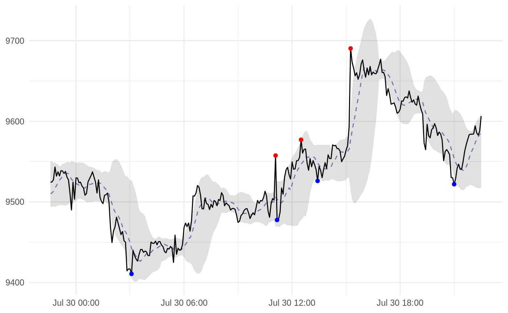
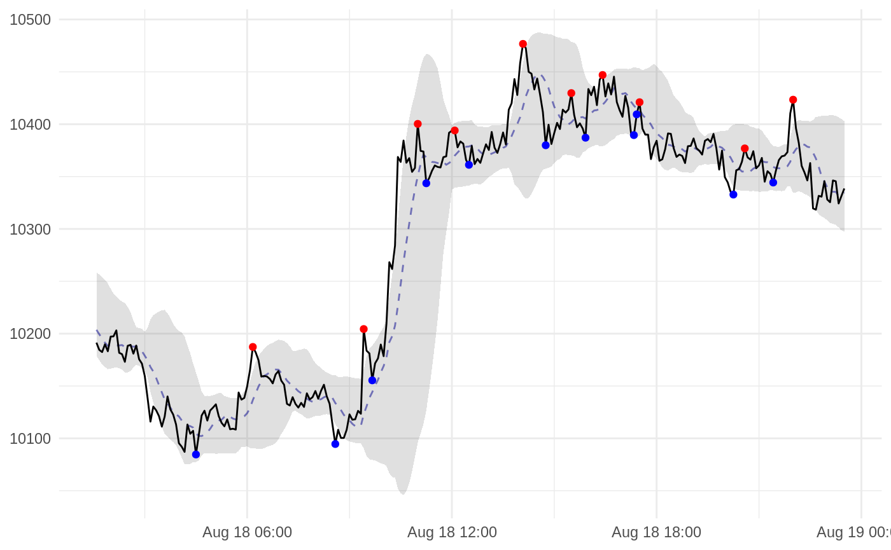
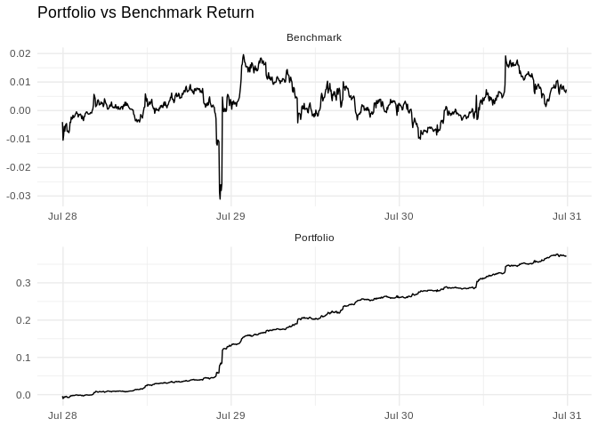

Getting Started
Let’s start by importing the library:
Here’s a quick example for setting-up a recipe to produce ZigZag, Bollinger Bands, and moving average:
# an example recipe
rec <- recipe(. ~ ., data = btcusdt) %>%
step_zigzag(close, change = 0.3, state = TRUE, span = c(1, -1)) %>%
step_bbands(high, low, close) %>%
step_ma(close) %>%
step_naomit(all_predictors()) %>%
prep()
# quick check
juice(rec)
#> # A tibble: 26,161 x 15
#> datetime open high low close volume turnover zigzag_value
#> <dttm> <dbl> <dbl> <dbl> <dbl> <dbl> <dbl> <dbl>
#> 1 2019-05-01 01:35:00 5340. 5340. 5331. 5331. 0.510 2722. 5344.
#> 2 2019-05-01 01:40:00 5338. 5339. 5333 5333 0.402 2146. 5346.
#> 3 2019-05-01 01:45:00 5335. 5337. 5333 5336. 0.819 4368. 5348.
#> 4 2019-05-01 01:50:00 5336. 5337. 5336. 5337. 0.0199 106. 5350.
#> 5 2019-05-01 01:55:00 5338. 5340. 5336. 5340. 1.39 7437. 5351.
#> 6 2019-05-01 02:00:00 5342. 5344. 5342 5344. 1.03 5504. 5353.
#> 7 2019-05-01 02:05:00 5344. 5352. 5344 5352. 1.26 6716. 5355.
#> 8 2019-05-01 02:10:00 5353 5355. 5348. 5348. 0.191 1020. 5357.
#> 9 2019-05-01 02:15:00 5349. 5369. 5348. 5362. 0.310 1661. 5358.
#> 10 2019-05-01 02:20:00 5361. 5362. 5355. 5355. 0.356 1908. 5360.
#> # … with 26,151 more rows, and 7 more variables: zigzag_trend <fct>,
#> # zigzag_swing <fct>, bbands_dn <dbl>, bbands_ma <dbl>, bbands_up <dbl>,
#> # bbands_pctb <dbl>, ma_close_value <dbl>This example recipe would be very helpful for preparing data for further analysis. For example, here is a quick visualization:
# import libs
library(ggplot2)
# quick visualization
data_viz <- juice(rec) %>%
tail(12 * 24)
data_highlight <- data_viz %>%
drop_na() %>%
filter(zigzag_swing != "hold")
ggplot(data_viz, aes(x = datetime, y = close)) +
geom_ribbon(aes(ymin = bbands_dn, ymax = bbands_up), alpha = 0.15) +
geom_line(aes(y = ma_close_value), colour = "darkblue", linetype = "dashed", alpha = 0.5) +
geom_line() +
geom_point(data = data_highlight, aes(colour = zigzag_swing)) +
scale_colour_manual(values = c("up" = "blue", "down" = "red")) +
guides(colour = FALSE) +
labs(x = NULL, y = NULL) +
theme_minimal()
Since we have the recipes object, this approach also very helpful to preprocess new data:
# import libs
library(rucoin)
# get new data
btcusdt_new <- get_kucoin_prices(
symbols = "BTC/USDT",
from = "2019-08-18",
to = "2019-08-19",
frequency = "5 minutes"
)
# get preprocess result for new data
bake(rec, btcusdt_new)
#> # A tibble: 264 x 15
#> datetime open high low close volume turnover
#> <dttm> <dbl> <dbl> <dbl> <dbl> <dbl> <dbl>
#> 1 2019-08-18 01:35:00 10173. 10198. 10173. 10191. 42.6 434072.
#> 2 2019-08-18 01:40:00 10192. 10195. 10171. 10184. 64.1 652153.
#> 3 2019-08-18 01:45:00 10184. 10184. 10164. 10182. 53.5 544848.
#> 4 2019-08-18 01:50:00 10182. 10193 10180 10190. 26.2 266446.
#> 5 2019-08-18 01:55:00 10190. 10192. 10177. 10183. 50.9 518042.
#> 6 2019-08-18 02:00:00 10182 10203. 10178. 10197. 46.7 475847.
#> 7 2019-08-18 02:05:00 10193. 10205. 10192. 10197. 25.5 260335.
#> 8 2019-08-18 02:10:00 10197. 10204. 10197. 10203. 23.8 242407.
#> 9 2019-08-18 02:15:00 10204. 10204. 10180. 10182. 38.8 395315.
#> 10 2019-08-18 02:20:00 10182. 10188. 10180. 10180. 21.7 220920.
#> # … with 254 more rows, and 8 more variables: zigzag_value <dbl>,
#> # zigzag_trend <fct>, zigzag_swing <fct>, bbands_dn <dbl>,
#> # bbands_ma <dbl>, bbands_up <dbl>, bbands_pctb <dbl>,
#> # ma_close_value <dbl>Thus, make a reproducible analysis for new data easier too:
# quick visualization
data_viz <- bake(rec, btcusdt_new)
data_highlight <- data_viz %>%
drop_na() %>%
filter(zigzag_swing != "hold")
ggplot(data_viz, aes(x = datetime, y = close)) +
geom_ribbon(aes(ymin = bbands_dn, ymax = bbands_up), alpha = 0.15) +
geom_line(aes(y = ma_close_value), colour = "darkblue", linetype = "dashed", alpha = 0.5) +
geom_line() +
geom_point(data = data_highlight, aes(colour = zigzag_swing)) +
scale_colour_manual(values = c("up" = "blue", "down" = "red")) +
guides(colour = FALSE) +
labs(x = NULL, y = NULL) +
theme_minimal()
Beside for market descriptive or predictive analysis, this package also provide some tools for performance analytics:
# an example recipe
rec <- recipe(. ~ ., data = actions) %>%
step_cumret(benchmark, portfolio, prices = "close") %>%
step_naomit(all_predictors()) %>%
prep()
# quick check
juice(rec)
#> # A tibble: 863 x 6
#> datetime close benchmark portfolio cumret_benchmark
#> <dttm> <dbl> <fct> <fct> <dbl>
#> 1 2019-07-27 23:55:00 9486. buy buy -0.00405
#> 2 2019-07-28 00:00:00 9457. hold hold -0.0104
#> 3 2019-07-28 00:05:00 9396. hold hold -0.00879
#> 4 2019-07-28 00:10:00 9412. hold hold -0.00559
#> 5 2019-07-28 00:15:00 9442. hold hold -0.00726
#> 6 2019-07-28 00:20:00 9426. hold hold -0.00533
#> 7 2019-07-28 00:25:00 9445. hold hold -0.00482
#> 8 2019-07-28 00:30:00 9450. hold hold -0.00458
#> 9 2019-07-28 00:35:00 9452. hold hold -0.00732
#> 10 2019-07-28 00:40:00 9426. hold hold -0.00715
#> # … with 853 more rows, and 1 more variable: cumret_portfolio <dbl>Which, again, could also very helpful to build the related visualizations:
# another helper libs
library(stringr)
# quick visualization
data_viz <- juice(rec) %>%
select(datetime, cumret_benchmark, cumret_portfolio) %>%
gather(key, value, -datetime) %>%
mutate(key =
str_replace_all(key, "cumret_", "") %>%
str_to_title() %>%
factor(c("Portfolio", "Benchmark"))
)
ggplot(data_viz, aes(x = datetime, y = value)) +
geom_line() +
facet_wrap(vars(key), ncol = 1, scales = "free") +
labs(title = "Portfolio vs Benchmark Return", x = NULL, y = NULL) +
theme_minimal()